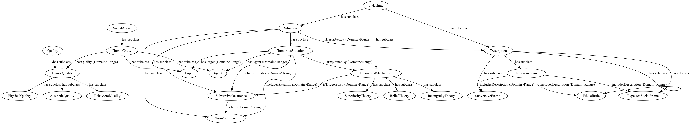
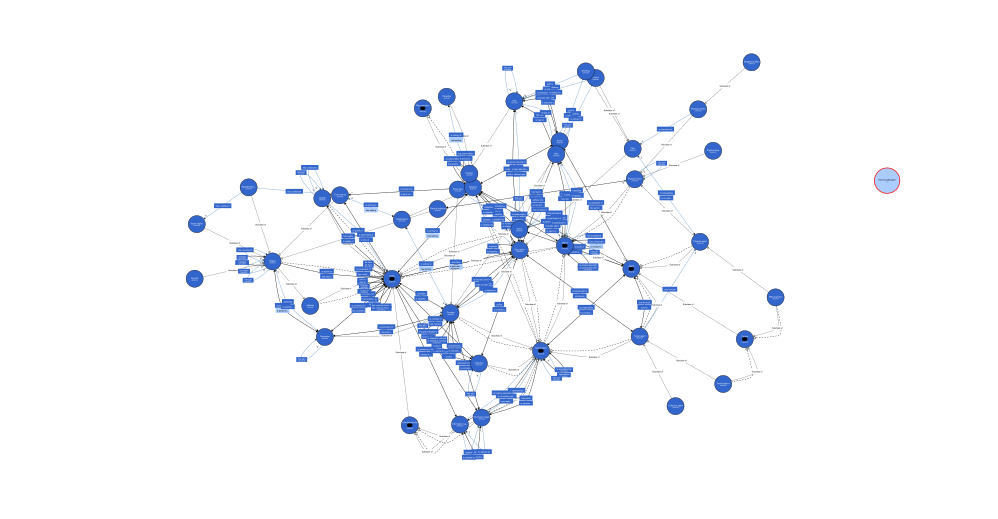

Knowledge Representation and Extraction 2026 — University Project
It's Always
SunnyOntology
This ontology provides a semantic model of comedy generated by the subversion of ethical and social rules in television. More specifically, it maps the epitome of immoral-humor sitcoms: It's Always Sunny in Philadelphia.
By applying the Description and Situation (D&S) pattern, we aim to answer one underlying question we aim to answer is: if this behaviour is so wrong, what makes it funny?
The model is designed to be flexible, allowing future mapping both of the entire series or other comedic work that share the same strucure of subversion.
GitHub Repository01 — Theoretical Framework
The Gang Reads the Literature
Despite being a fundamental mechanism of the human experience, there is not an universally accepted theory of humor. Consequently, different scholars decided to look at the problem from multiple angles.
At the most basic level we can describe it as «an intended or unintended message interpreted as funny» (Lynch, 2002)
Going a step further, and examining it with a focus on the cognitive mechanism, John Morreal (1983) highlights its rationality – distancing it from the more adaptive animal emotions – and linking humor to the «playful enjoyment of incongruity». Therefore, incongruity and surprise can be defined as the core of comedy.
In general, we can divide humor into three main categories: arousal-safety, incongruity-resolution and humorous disparagement (Mills, 2005). The latter, in particular, is a social tool for criticizing censure and control. In this specific case, the main subjects involved in the power dynamics are:
- A joke teller
- A joke hearer
- A victim (target of the joke)
The respective relationships between these three subjects corresponds to a specific type of disparagement: if one, for example wants to offend the victim it’s put-down humor. (Millis, 2005) What we can gather from this theory is that, in this specific case of our interest, the joke has always an acting entity (Agent) and a Target, even if it’s self-deprecating humor.
What is interesting, especially for our ontology, is that disparagement (detraction, denunciation) itself is not funny. What It’s Always Sunny in Philadelphia manages to do is exaggerate this element whilst keeping it humorous because its characters are clearly negative examples. In this specific framing laughter becomes, from a psychological point of view: «sudden glory experienced in the subject upon recognition of its superiority to some deformed object by “comparison whereof they suddenly applaud themselves”» (Hobbes, quoted in Wickberg, 1998)
More specifically, the series, usually sets up a situation and makes its character behave in the opposite way they are expected to, according to the specific semantic frame the occasion served. What interests our research is the «transgression of decorum and verisimilitude: on deviation from any social or aesthetic rule, norm, model, convention or law.» (Neale&Krutnik, 1990)
They break the ethical and moral rules of western society offering both a relief (as a way of undermining the rigid schemes of society) and becoming a laughingstock for the spectator. In this context, there is a duality of emotions the spectator is able to experience: feeling superior but also recognizing that «their weakness…is ours», safely observed through the distance that TV gives us. (Durgnat, 1969)
Consequently, one must keep in mind the three traditional perspectives of humor (Lynch, 2002):
- Superiority
- Incongruity
- Relief
The last fundamental element that contributes to the picture we are painting is that the characters always lose. As seen in the comedy of social embarrassment, the individual is at odds with the world, and the world inevitably wins. (Gray, 2006) The disruption of morality is not an example to follow, because they keep on losing, damned to be outside of society and its rules.
Carriero, V.A., Gangemi, A., Nuzzolese, A.G., & Presutti, V. (2021). An ontology design pattern for representing recurrent situations. Amsterdam: IOS Press. https://doi.org/10.3233/SSW210013
Durgnat, R. (1969). The crazy mirror: Hollywood comedy and the American image. London: Faber.
Gray, F. (2005). Privacy, embarrassment and social power: British sitcom. In S. Lockyer & M. Pickering (Eds.), Beyond a joke: The limits of humour (pp. 146–161). Palgrave Macmillan.
Lynch, O. (2002). Humorous communication: Finding a place for humor in communication research. Communication Theory, 12(2), 423–445.
Mills, B. (2005). Television sitcom. London: BFI.
Morreall, J. (1983). Taking laughter seriously. Albany: State University of New York Press.
Neale, S., & Krutnik, F. (1990). Popular film and television comedy. London: Routledge.
Wickberg, D. (1998). The senses of humor. Ithaca, NY: Cornell University Press.
02 — Methodology
The Gang Collects the Data
Given the theoretical framework, we needed a structured approach to translate the show's dynamic humor into a formal ontology. Following a pattern-based methodology , we started by defining the scope through specific Competency Questions (CQs) aimed at investigating the exact correlation between comedic mechanisms, character flaws, and moral subversion. To ground our model in actual data, we manually selected and analyzed 10 representative scenes from the series. We structured our initial data collection using an Excel spreadsheet, which was subsequently exported as a CSV file. This tabular format allowed us to systematically map out the core narrative components before the ontology population phase. For each occurrence, we identified the core narrative components within the situation, which we treat as a generalization over events, states, and actions: we mapped who acts as the instigator (Agent), who suffers the consequences (Target), which comedic theory is at play, and what specific societal norm is being shattered.
Moving to the modeling phase in Protégé, we faced a significant structural challenge. The characters in It's Always Sunny frequently shift their status—acting as cruel perpetrators in one scene and vulnerable victims in the next. To avoid "entity merging" (where a character's global traits would incorrectly overlap across different episodes), we decided to instantiate unique, scene-specific "Avatars" for each character. We then linked these specific instances using the standard rdfs:label property. This methodological approach allowed us to maintain the logical separation required by the machine to prevent false positives, while preserving the presentational continuity of the characters for our SPARQL knowledge extraction.
| scene_id | episode_number | episode_title | timestamp | scene_description | agent_name | agent_quality_type | agent_quality_desc | target_name | target_quality_type | target_quality_desc | social_frame_id | social_frame_name | social_frame_definition | ethical_rule_id | ethical_rule_name | ethical_rule_definition | subversive_frame_id | subversive_frame_name | subversive_frame_definition | norm_occurrence_desc | subversive_occurrence_desc | theoretical_mechanism |
|---|---|---|---|---|---|---|---|---|---|---|---|---|---|---|---|---|---|---|---|---|---|---|
| HS_001 | S12E02 | The Gang Goes to a Water Park | 00:02:32 | Mac and Dee insult a lifeguard who tells them they are too big for the children's slide, then they force their way down and get painfully stuck. | Mac, Dee | BehavioralQuality | Arrogant adults who believe their age makes them superior to rules. | Lifeguard | BehavioralQuality | A employee strictly enforcing safety protocols | ESF_RecreationalSafety | Recreational Facility Safety | A public setting where patrons must follow safety rules and staff instructions to prevent injury | ER_SafetyCompliance | Compliance with Safety Regulations | A social norm requiring patrons to strictly follow age/size restrictions and respect designated staff instructions | SubF_ChildishRebellion | Childish Rebellion by Adults | Adults exhibiting severe regression, throwing tantrums and breaking simple rules designed for children out of pure stubbornness | Mac and Dee should respect the lifeguard's instructions, accept that the slide is for children only, and walk away to use the adult attractions | Mac and Dee dismiss the lifeguard's warning, selfishly push their way down the slide, and get wedged in the tube. | SuperiorityTheory |
| HS_002 | S08E05 | The Gang Gets Analyzed | 00:00:46 | Dee brings the entire gang into her therapy session, and Frank dumps dirty dishes on the floor, demanding the therapist decide who should wash them | Dee, Gang | BehavioralQuality | Severe lack of social boundaries, and inability to resolve basic adult tasks | The Therapist | BehavioralQuality | Professional demeanor and strict adherence to clinical psychological standards | ESF_PsychotherapySession | Clinical Psychotherapy Session | A confidential, clinical setting where a patient works with a professional to address deep psychological issues. | ER_ClinicalBoundaries | Respect for Clinical Purpose and Boundaries | A professional norm requiring the patient to use therapy for psychological healing and to respect the sanctity of the clinical space | SubF_TherapyTrivialization | Trivialization and Hijacking of Therapy | The distorted belief that a highly trained medical professional is merely a referee for petty, mundane domestic disputes | Dee should use the private session to explore her personal feelings about the dinner conflict and work on her own psychological growth alone | Dee hijacks the session by bringing in the gang, while Frank dumps a tablecloth of dirty dishes on the therapist's floor to demand a ruling on a chore | IncongruityTheory |
| HS_003 | S11E05 | Mac & Dennis Move to the Suburbs | 00:05:08 | Mac and Dennis in their yard and aggressively stare in silence at a friendly neighbor who comes over to welcome them | Mac, Dennis | BehavioralQuality | Extreme anti-social hostility, paranoia, and inability to comprehend basic friendly interactions. | Wally (The Neighbor) | BehavioralQuality | Polite, cheerful, and engaging in standard suburban pleasantries | ESF_SuburbanNeighborhood | Suburban Neighborhood Interaction | A residential community setting where neighbors are expected to be cordial, introduce themselves, and engage in polite small talk. | ER_NeighborlyEtiquette | Good Neighbor Etiquette and Basic Politeness | A social norm requiring individuals to acknowledge greetings, introduce themselves, and maintain a friendly demeanor with those living nearby | SubF_HostileParanoia | Urban Hostility and Paranoia in Suburbia | The distorted belief that friendly, unsolicited social interaction is a threat or an offensive intrusion of privacy that warrants aggressive silence | Mac and Dennis should smile back, introduce themselves, and exchange polite pleasantries with the neighbor welcoming them. | Mac and Dennis stare aggressively in dead silence at the greeting neighbor, refusing to speak, and later express genuine outrage that he dared to talk to them | IncongruityTheory |
| HS_004 | S05E05 | The Waitress Is Getting Married | 00:06:18 | Mac and Dennis try to create an online dating profile for Charlie, but get frustrated when he gives absurd answers | Charlie | BehavioralQuality | Profound detachment from reality, bizarre personal tastes, and inability to understand basic social conventions | Mac and Dennis | BehavioralQuality | Frustrated friends trying to apply standard societal dating norms to an abnormal person. | ESF_OnlineDatingProfile | Online Dating Profile Creation | A social ritual where an individual highlights their most attractive, relatable, and normal hobbies to find a romantic partner | ER_SocialRelatability | Relatability and Social Appeal in Dating | The expectation that one should present understandable and socially acceptable traits to be perceived as an attractive and safe partner | SubF_BizarreUnrelatability | Absurd and Repellent Personal Tastes | The genuine expression of nonsensical, grotesque, or deeply unsettling preferences that guarantee immediate social rejection | Charlie should provide normal, attractive answers like "traveling," "movies," or "pizza" to make himself appealing to women | Charlie answers the questions with absurd, repellent things like "milk steak," "magnets," and "ghouls," completely ruining the profile | IncongruityTheory |
| HS_005 | S13E05 | The Gang Gets New Wheels | 00:16:50 | Mac and Charlie confront the thief who stole their bike, but intimidated by him, they retreat and instead brutally beat up his kid and friends to take the bike back | Mac, Charlie | BehavioralQuality | Extreme cowardice disguised as toughness, leading to completely disproportionate and misdirected violence | The Kids | PhysicalQuality | Small, physically weak children who are unable to defend themselves against two grown men | ESF_DisputeResolution | Adult Dispute Resolution | A social situation where mature adults resolve conflicts or thefts through verbal negotiation, law enforcement, or direct confrontation with the responsible party | ER_ProtectionOfMinors | Protection of Minors from Adult Violence | An absolute ethical and legal norm stating that grown adults must never physically assault children, regardless of the circumstances or provocation | SubF_DisplacedCowardice | Displaced Violence Due to Cowardice | The distorted logic of attacking innocent or weaker targets (children) to compensate for the fear of confronting the actual, physically intimidating perpetrator | Mac and Charlie should confront the intimidating father who stole their bike or call the police to resolve the theft legally | Too terrified to fight the adult thief, Mac and Charlie return and brutally beat up his young children instead to steal the bike back | IncongruityTheory |
| HS_006 | S11E08 | Charlie Catches a Leprechaun | 00:04:40 | Charlie suggests using green paint to dye the bar's beer for St. Patrick's Day, and Mac discovers Charlie has been casually drinking the toxic paint himself | Charlie | BehavioralQuality | Complete lack of basic survival instincts, severe ignorance, and self-destructive habits treated as normal behavior | Mac | BehavioralQuality | Acting as the voice of basic reason trying to prevent poisoning | ESF_FoodAndBeverageSafety | Food and Beverage Safety Standards | A baseline commercial and personal standard where consumable items must be non-toxic, and individuals avoid ingesting deadly chemicals | ER_SelfPreservation | Basic Self-Preservation and Health | The universal human instinct and ethical responsibility to protect one's own body and others by not consuming or serving lethal toxins | SubF_ToxicConsumption | Casual Consumption of Toxic Substances | The absurd normalization of eating or drinking industrial, deadly chemicals as if they were harmless everyday food items | Charlie should use safe, edible food coloring for the beer and acknowledge the extreme danger of ingesting industrial paint | Charlie plans to serve paint to customers, reveals his green tongue to show he drinks it himself, and dismisses Mac's horror about its toxicity | IncongruityTheory |
| HS_007 | S08E06 | Charlie's Mom Has Cancer | 00:17:57 | During a bar fundraiser for her supposed cancer, Charlie's mom reads a desperate speech but then casually admits to the crowd she faked the illness just for attention | Charlie's Mom | BehavioralQuality | Extreme emotional manipulation, narcissism, and a complete disregard for moral boundaries regarding illness | The Fundraiser Crowd, Charlie | BehavioralQuality | Genuine empathy, grief, and willingness to donate money to a tragic cause | ESF_CharityFundraiser | Charity Fundraiser Event | A social gathering designed to elicit empathy and collect financial donations to help someone facing a severe tragedy or illness | ER_MedicalHonesty | Truthfulness Regarding Severe Illness | A fundamental moral rule prohibiting individuals from faking terminal diseases to exploit others' empathy or steal charitable funds | SubF_FakedIllness | Faking Illness for Attention | The sociopathic act of fabricating a deadly disease to manipulate loved ones into giving affection and strangers into giving money | Charlie’s mom should honestly disclose her health status, never fake a terminal illness, and seek her son's attention through healthy communication | Charlie’s mom stands before a sympathetic crowd wearing makeup to look dying, and casually admits she made up the cancer just to get Charlie to care about her | ReliefTheory |
| HS_008 | S04E09 | Dennis Reynolds: An Erotic Life | 00:09:20 | Dee tries to perform stand-up comedy but gets severe stage fright, repeatedly dry heaving loudly into the microphone before fleeing | Dee | PhysicalQuality | Uncontrollable physical anxiety, nausea, and bodily distress manifesting as loud dry heaves | The Comedy Club Audience | BehavioralQuality | Attentive, expectant, and waiting to be entertained by a prepared comedic routine | ESF_PublicPerformance | Public Stand-Up Comedy Performance | An entertainment setting where a performer stands on stage to confidently deliver rehearsed jokes and amuse an audience | ER_PerformanceComposure | Theatrical Composure and Preparation | The social expectation that a public performer maintains basic composure, speaks clearly, and attempts to entertain rather than displaying severe bodily distress | SubF_BodilyPanic | Involuntary Bodily Panic and Failure | The complete physical and psychological collapse of a performer, resulting in grotesque bodily reflexes instead of rehearsed entertainment | Dee should confidently hold the microphone, tell her rehearsed jokes smoothly, and attempt to make the audience laugh | Dee stammers nervously, fails to tell a single joke, and repeatedly dry heave loudly into the microphone before running off stage | SuperiorityTheory |
| HS_009 | S05E09 | Mac and Dennis Break Up | 00:09:56 | Dennis demands Dee peel his apple because Mac used to do it to protect him from "toxins," and screams when she tells him to just eat the skin | Dennis | BehavioralQuality | Extreme infantile dependence, narcissism, and bizarre paranoia regarding normal food | Dee | BehavioralQuality | Rational adult refusing to enable a grown man's bizarre and childish demands | ESF_AdultSelfSufficiency | Basic Adult Self-Sufficiency | The social expectation that a grown adult is capable of preparing and eating basic foods, like an apple, without assistance | ER_PersonalIndependence | Personal Independence and Maturity | A social norm dictating that adults should not treat their peers as servants for trivial tasks or throw tantrums when denied | SubF_InfantileCodependency | Infantile Co-dependency and Tantrums | The regressive behavior of a grown adult demanding toddler-level care from others and reacting with explosive rage when treated like an adult | Dennis should either peel the apple himself or simply eat it with the skin like a normal, functioning adult | Dennis demands Dee peel his apple, cites absurd fears of skin toxins, and throws a screaming tantrum when she refuses to coddle him | IncongruityTheory |
| HS_010 | S02E03 | Dennis and Dee Go on Welfare | 00:19:35 | Dennis and Dee confess their severe crack addiction to Mac and Charlie, who immediately respond with total apathy and ruthlessly mock them for crying about it | Mac, Charlie | BehavioralQuality | Complete lack of human empathy, cruelty, and taking sadistic pleasure in the severe misfortune of their friends | Dennis, Dee | PhysicalQuality | Visibly strung out, physically deteriorated, and in a state of desperate withdrawal | ESF_CloseFriendship | Close Friendship and Mutual Support | A social bond between close friends where mutual support, empathy, and help are expected during times of severe personal crisis | ER_CompassionAndSupport | Compassion in Times of Crisis | The ethical obligation to provide emotional support and intervention when a loved one confesses to a life-threatening problem like severe drug addiction | SubF_CruelApathy | Callous Apathy and Cruel Mockery | The sociopathic reaction of finding immense amusement in the suffering of friends, completely discarding any sense of empathy or duty to help | Mac and Charlie should express deep shock and concern, offer immediate help, and suggest rehab for their friends' severe addiction | Mac and Charlie immediately state they do not care, laugh at their friends' degraded state, and aggressively pantomime them crying for crack | SuperiorityTheory |
03 — Knowledge Representation
The Gang Models the Humor
Given the challenge of mapping a mechanism as interpretational as humor, and especially subversive humor, the ontology is designed according to the Description and Situation (D&S) pattern. This creates a model in which two different levels work simultaneously: an abstract level and a concrete one. This allowed us to keep structurally separated the explanation and the realization of comedic interactions.
However, one specification is needed. According to the D&S pattern, theoretically, every situation satisfies some description (Carriero et al., 2021). In our work this never happens. In fact, the core of the ontology is based on the reiterated violation of the premises. What makes the humor subversive is that there is a set up, a situation where the viewer associates some kind of social or moral behaviour, and the show systematically decides to show its characters doing the complete opposite.
Applying this framework to map the series allowed us to do the same: set up a frame, contextualizing the situation, specifying also the ethical rule one would normally apply in the context, and then, with the property violates, we juxtaposed it to the real occurrence, where the description is completely reversed.
More specifically, the EthicalRule (Description level) is better explained in the NormOccurence (Situation layer) so as to define more precisely how the generic rule applies to the specific context, which is then violated by the SubversiveOccurence — what the characters decided to do.
Each humorous scene is modeled as a blending of two parallel layers: an abstract Description (the expected social norms) and a concrete Situation (what actually happens). These two classes — HumorousFrame and HumorousSituation — serve as collectors of the specific situations and descriptions, and help us model a complex multi-layered phenomenon: the humor that emerges from the contrast between them.
Description Layer — Abstract
ExpectedSocialFrame
The normal social context — a funeral, a therapy session, a water park.
EthicalRule
The behavioural norm that applies in that context.
SubversiveFrame
The distorted logic the characters operate by. No Situation counterpart — it is the explanation of the subversion itself.
HumorousFrame
Blending node — collects all three Descriptions via includesDescription.
Situation Layer — Concrete
NormOccurence
What the characters should have done in this specific scene.
SubversiveOccurence
What they actually do. Violates the NormOccurence. Triggers the TheoreticalMechanism.
HumorousSituation
Blending node — collects Norm and Subversive occurrences via includesSituation.
Beyond the D&S structure, three additional classes complement the model. They are structurally independent from the pattern but connected to it through object properties.
TheoreticalMechanism
The academic explanation of what psychological behaviour triggers the humor — drawn directly from the three classical theories discussed in the Theoretical Framework.
SuperiorityTheory
The viewer laughs by recognising the characters' moral and social inferiority (Hobbes, in Wickberg, 1998).
IncongruityTheory
Humor arises from the mismatch between expectation and outcome (Morreall, 1983).
ReliefTheory
Laughter as release — the characters undermine rigid social schemes, offering the viewer a safe transgression (Durgnat, 1969).
HumorEntity
The necessary actors in any humorous action — as stated in the Theoretical Framework, every humorous scene involves a joke teller and a victim (Mills, 2005).
Agent
The joke teller — the one who performs the subversive act.
Target
The victim of the joke — may coincide with the Agent in self-deprecating humor.
HumorQuality
Inherent traits of the HumorEntity. They characterise the entity independently from any specific scene.
AestheticQuality
Visual or stylistic traits — e.g. how a character presents themselves.
BehaviouralQuality
Recurring patterns of conduct — e.g. Mac's denial, Charlie's illiteracy.
PhysicalQuality
Bodily characteristics relevant to the humor — e.g. Frank's appearance.

Figure 1 — A representation of the classes and properties. It can be seen better here
HS_001 · S12E02 · 00:02:32
The Gang Goes to a Water Park
Mac and Dee insult a lifeguard who tells them they are too big for the children's slide, then force their way down and get painfully stuck.
Description Layer
ESF_RecreationalSafety a ExpectedSocialFrame
ER_SafetyCompliance a EthicalRule
SubF_ChildishRebellion a SubversiveFrame
HS_001_frame includesDescription all three above
Situation Layer
HS_001_norm a NormOccurence
HS_001_subversive a SubversiveOccurence
HS_001_subversive violates HS_001_norm
HS_001_mechanism a SuperiorityTheory
Since the core of the ontology relies on Description & Situation, wanting to model human-centered knowledge, the most organic and logical choice was to align it with DOLCE-UltraLite (DUL), as was also used by Carriero et al. (2021). The perfect integration between the pattern and the corresponding ontology allows the project to have a more solid structure — preventing inconsistencies — and more importantly, ensuring interoperability and authoritativeness.
One small detail is that DUL is imported from http://www.loa-cnr.it/ontologies/DUL.owl, hosted by the LOA-CNR server, but is a perfect mirror of the more canonical endpoint; the only difference is that it was more easily downloadable to be integrated into Protégé for a smoother alignment.
| Local | Relation | DUL | Rationale |
|---|---|---|---|
| :Description | ≡ equivalentClass | dul:Description | Identical concept — the abstract layer of D&S. |
| :Situation | ≡ equivalentClass | dul:Situation | Identical concept — the concrete layer of D&S. |
| :SubversiveOccurence | ⊆ subClassOf | dul:Action | The subversion is always intentional — an agent deliberately acts against the norm. |
| :HumorEntity | ⊆ subClassOf | dul:SocialAgent | Characters are social agents. |
| :HumorQuality | ⊆ subClassOf | dul:Quality | Behavioral, aesthetic and physical traits are inherent qualities of entities. |
| :isDescribedBy | ≡ equivalentProperty | dul:isDescribedBy | Same domain (Situation) and range (Description). |
| :hasAgent :hasTarget | ⊆ subPropertyOf | dul:hasParticipant | Both agent and target participate in the humorous situation. |
| :includesSituation :includesDescription | ⊆ subPropertyOf | dul:hasComponent | Part-whole composition within their respective layers. |
Carriero, V.A., Gangemi, A., Nuzzolese, A.G., & Presutti, V. (2021). An ontology design pattern for representing recurrent situations. Amsterdam: IOS Press. https://doi.org/10.3233/SSW210013
04 — Knowledge Extraction
The Gang Queries the Graph
The ontology was populated with 10 scenes from the series. The full Turtle file is available at SunnyOntology_populated.ttl.

Visual representation of the populated graph realized with WebVOWL: https://service.tib.eu/webvowl/#
Full graph available con itsAlwaysPopulatedGraph.svg
To automate this process and ensure ontological consistency, we developed a Python script. While the structure of the ontology was consciously left more flexible and open (just connecting the superclasses Description and Situation), in this population part the logic was made stricter, expliciting the relationship between the specific instances of the Descriptions and their correspondent in the Situation part. This also helps understanding the misalignment previously cited, seeing how the two classes, in the real occurrence, contrast one another.
# Linking the NormOccurrence (S) to the EthicalRule (D)
if rule_uri:
g.add((norm_uri, SUNNY.isDescribedBy, rule_uri))
# Linking the SubversiveOccurence (S) to the SubversiveFrame (D)
if subversive_frame_uri:
g.add((subversive_uri, SUNNY.isDescribedBy, subversive_frame_uri))SELECT DISTINCT ?scene ?agent ?targetQuality ?ethicalRuleName ?subversiveAction WHERE { ?scene a sunny:HumorousSituation . ?scene sunny:isExplainedBy ?mechanism . ?scene sunny:hasTarget ?target . ?scene sunny:hasAgent ?agent . ?scene sunny:isDescribedBy ?frame . ?scene sunny:includesSituation ?subversiveOcc . ?mechanism a sunny:IncongruityTheory . ?target a sunny:Target ; sunny:hasQuality ?targetQuality . ?frame sunny:includesDescription ?ethicalRule . ?ethicalRule a sunny:EthicalRule ; rdfs:label ?ethicalRuleName . ?subversiveOcc a sunny:SubversiveOccurence ; rdfs:comment ?subversiveAction . }
| Scene | Agent | targetQuality | ethicalRuleName | subversiveAction |
|---|---|---|---|---|
| HS_002 | Gang | BehavioralQuality | Respect for Clinical Purpose and Boundaries | Dee hijacks the session by bringing in the gang, while Frank dumps a tablecloth of dirty dishes on the therapist's floor |
| HS_002 | Dee | BehavioralQuality | Respect for Clinical Purpose and Boundaries | Dee hijacks the session by bringing in the gang, while Frank dumps a tablecloth of dirty dishes |
| HS_006 | Charlie | BehavioralQuality | Basic Self-Preservation and Health | Charlie plans to serve paint to customers, reveals his green tongue, and dismisses toxicity |
| HS_005 | Charlie | PhysicalQuality | Protection of Minors from Adult Violence | Too terrified to fight the adult thief, they brutally beat up his young children instead |
| HS_005 | Mac | PhysicalQuality | Protection of Minors from Adult Violence | Too terrified to fight the adult thief, they brutally beat up his young children instead |
| HS_003 | Dennis | BehavioralQuality | Good Neighbor Etiquette and Basic Politeness | Mac and Dennis stare aggressively in dead silence at the greeting neighbor |
| HS_003 | Mac | BehavioralQuality | Good Neighbor Etiquette and Basic Politeness | Mac and Dennis stare aggressively in dead silence at the greeting neighbor |
| HS_009 | Dennis | BehavioralQuality | Personal Independence and Maturity | Dennis demands Dee peel his apple, cites absurd fears of toxins, and throws a tantrum |
| HS_004 | Charlie | BehavioralQuality | Relatability and Social Appeal in Dating | Charlie answers questions with "milk steak", "magnets", and "ghouls", ruining the profile |
SELECT DISTINCT ?scene ?agent ?agentQuality ?subversiveFrameName WHERE { ?scene a sunny:HumorousSituation . ?scene sunny:hasAgent ?agent . ?scene sunny:isDescribedBy ?frame . ?scene sunny:isExplainedBy ?mechanism . ?mechanism a sunny:SuperiorityTheory . ?agent a sunny:Agent ; sunny:hasQuality ?agentQuality . ?frame sunny:includesDescription ?subversiveFrame . ?subversiveFrame a sunny:SubversiveFrame ; rdfs:label ?subversiveFrameName . }
| scene | agent | agentQuality | subversiveFrameName |
|---|---|---|---|
| HS_001 | Mac | BehavioralQuality | "Childish Rebellion by Adults" |
| HS_001 | Dee | BehavioralQuality | "Childish Rebellion by Adults" |
| HS_010 | Mac | BehavioralQuality | "Callous Apathy and Cruel Mockery" |
| HS_010 | Charlie | BehavioralQuality | "Callous Apathy and Cruel Mockery" |
SELECT DISTINCT ?scene ?agent ?target ?normExpected ?subversiveAction WHERE { ?scene a sunny:HumorousSituation . ?scene sunny:hasAgent ?agent ; sunny:hasTarget ?target . ?scene sunny:includesSituation ?normOcc ; sunny:includesSituation ?subvOcc . ?agent sunny:hasQuality sunny:BehavioralQuality . ?target sunny:hasQuality sunny:PhysicalQuality . ?normOcc a sunny:NormOccurence ; rdfs:comment ?normExpected . ?subvOcc a sunny:SubversiveOccurence ; rdfs:comment ?subversiveAction . }
| scene | agent | target | normExpected | subversiveAction |
|---|---|---|---|---|
| HS_005 | Charlie | The_Kids | Confront the intimidating father or call the police | Brutally beat up his young children instead to steal the bike back |
| HS_005 | Mac | The_Kids | Confront the intimidating father or call the police | Brutally beat up his young children instead to steal the bike back |
| HS_010 | Mac | Dee | Express deep shock and concern, offer immediate help | Laugh at their friends' degraded state and pantomime them crying for crack |
| HS_010 | Mac | Dennis | Express deep shock and concern, offer immediate help | Laugh at their friends' degraded state and pantomime them crying for crack |
| HS_010 | Charlie | Dee | Express deep shock and concern, offer immediate help | Laugh at their friends' degraded state and pantomime them crying for crack |
| HS_010 | Charlie | Dennis | Express deep shock and concern, offer immediate help | Laugh at their friends' degraded state and pantomime them crying for crack |
SELECT DISTINCT ?character ?agentEpisode ?targetEpisode WHERE { ?scene1 a sunny:HumorousSituation ; sunny:hasTitle ?agentEpisodeTitle ; sunny:hasAgent ?agentNode . ?agentNode rdfs:label ?characterName . ?scene2 a sunny:HumorousSituation ; sunny:hasTitle ?targetEpisodeTitle ; sunny:hasTarget ?targetNode . ?targetNode rdfs:label ?characterName . FILTER(?scene1 != ?scene2) BIND(STR(?characterName) AS ?character) BIND(STR(?agentEpisodeTitle) AS ?agentEpisode) BIND(STR(?targetEpisodeTitle) AS ?targetEpisode) }
| Character | agentEpisode | targetEpisode |
|---|---|---|
| Charlie | The Gang Gets New Wheels | Charlie's Mom Has Cancer |
| Mac | The Gang Gets New Wheels | Charlie Catches a Leprechaun |
| Mac | The Gang Gets New Wheels | The Waitress Is Getting Married |
| Charlie | Charlie Catches a Leprechaun | Charlie's Mom Has Cancer |
| Charlie | The Waitress Is Getting Married | Charlie's Mom Has Cancer |
| Mac | Dennis and Dee Go on Welfare | Charlie Catches a Leprechaun |
| Mac | Dennis and Dee Go on Welfare | The Waitress Is Getting Married |
| Charlie | Dennis and Dee Go on Welfare | Charlie's Mom Has Cancer |
| Dennis | Mac and Dennis Break Up | The Waitress Is Getting Married |
| Dennis | Mac and Dennis Break Up | Dennis and Dee Go on Welfare |
| Mac | The Gang Goes to a Water Park | Charlie Catches a Leprechaun |
| Mac | The Gang Goes to a Water Park | The Waitress Is Getting Married |
| Dee | The Gang Goes to a Water Park | Dennis and Dee Go on Welfare |
| Dee | The Gang Goes to a Water Park | Mac and Dennis Break Up |
| Dee | The Gang Gets Analyzed | Dennis and Dee Go on Welfare |
| Dee | The Gang Gets Analyzed | Mac and Dennis Break Up |
| Dennis | Mac & Dennis Move to the Suburbs | The Waitress Is Getting Married |
| Dennis | Mac & Dennis Move to the Suburbs | Dennis and Dee Go on Welfare |
| Mac | Mac & Dennis Move to the Suburbs | Charlie Catches a Leprechaun |
| Mac | Mac & Dennis Move to the Suburbs | The Waitress Is Getting Married |
05 — Conclusion
The Gang Wraps It Up
This project developed a formal ontology to conceptualize and map the humor mechanisms behind It's Always Sunny in Philadelphia. Our primary goal was to move beyond a simple classification of scenes and formalize the dynamic, often chaotic structure of comedic subversion. By querying the populated graph, we managed to uncover the underlying formula of the show's success: the comedy relies on the systematic and brutal collision between abstract societal expectations and the characters' concrete behavioral flaws. The descriptive power of the Description and Situation (D&S) pattern , where every situation theoretically satisfies some description, was validated through our SPARQL competency questions. These queries confirmed the model's consistency by retrieving the logical clashes we mapped.
Ultimately, the ontology helps us answer our initial research question: if this behavior is so wrong, what makes it funny? It is funny because the characters are trapped in a self-destructive loop. As highlighted by our "Karma" query (CQ4), those who act as cruel Agents inevitably become vulnerable Targets in a universe that constantly punishes their transgressions. Future work could extend the dataset to the entire series, or even apply this same formal framework to compare the subversion of norms across different television shows.